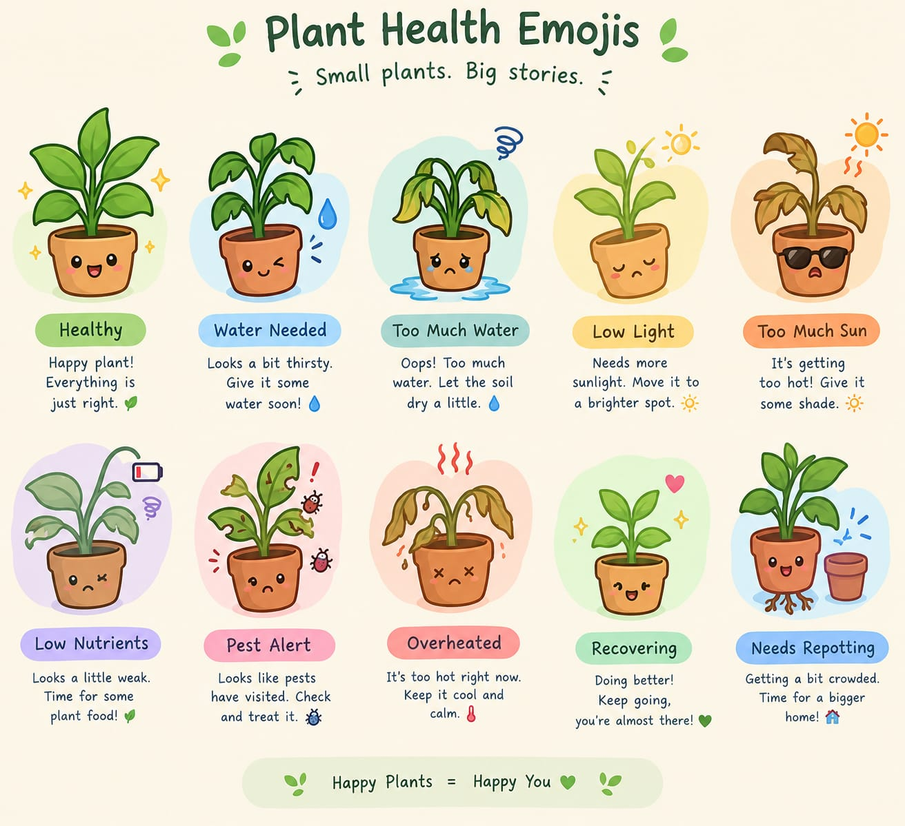

SIH26180 · Qualcomm Inc. · Hardware Prototype Simulation
KshetraSaarthi Hardware Simulation
A virtual demonstration of our proposed field hardware: camera + local sensors + edge intelligence combine crop observations and field context to produce an explainable farmer-facing decision. The current page represents the hardware workflow while the physical prototype is under development.
How to read this simulation
This is a hardware workflow simulation for the panel presentation. It does not claim that the current webpage contains the final physical sensors or trained edge model. Select a representative camera scenario, set simulated sensor values, run the scan, and follow the signal from the proposed sensor circuit → edge pipeline → farmer device.
- The camera scenarios and diagnosis outcomes are representative simulation inputs. The current page uses simplified rules to demonstrate the intended decision flow; a trained image model will replace this layer in the hardware prototype.
- The visual samples are original illustrations, not dataset photographs. They represent the type of camera evidence the future hardware model will process.
- Voice now only plays when you tap the speaker — not automatically — because auto-play from a background timer is blocked or silently fails in many browsers. A direct tap is the reliable path.
My Field Today
A simple field command center: sensors and weather are translated into clear traffic-light signals and one practical next action. Advanced AI, research and validation tools are intentionally placed after the farmer experience.
GOOD · FIELD STABLE
Check your field
AstraNex will turn the current field signals into one practical next step.
Real crop photo
Fill most of the frame with one leaf or crop area. The AI will show confidence and verification status instead of guessing.
🧠 Vision model status
🌾 Field Health at a Glance
Big pictorial signals make the important information understandable without reading technical sensor data. Every card updates when the field scan or simulator values change.
🌿 Plant Health Emojis
Small plants. Big stories. A simple visual guide to common plant-health signals.

How it works
Three-step loop: capture field evidence → combine visual and sensor context → provide a cautious, farmer-friendly action.
Sense
Phone camera + low-cost sensors read leaf condition, soil moisture, temperature and humidity in the field.
Fuse & Reason
A proposed lightweight edge model will interpret the camera input locally; the decision layer combines that result with sensor and weather context and applies uncertainty guardrails.
Assist
A short, localized next step is shown and spoken in the farmer's language, with verification encouraged when evidence is weak.
Live simulator
Set up a scenario below, run the scan, and see what the farmer's device would show and say.
Field Console
Field Intelligence
Round-2 evidence layer: confidence, environmental risk, sensor reliability and local history.
System readiness
Field / device status
🌾 Overall field health · farmer view
Risk at a glance
Recent field trend
Validation Lab · developer / judge view
These are deterministic engineering checks, not model-accuracy claims. Latency is measured locally for each run.
Sensor Circuit
Proposed field hardware — all values below are simulated in this presentation prototype.
Edge Pipeline
/ FIELD
CAPTURE
AI · PROPOSED
ENGINE
LAYER
ACTION
Device screen will show the farmer-facing alert here, in the farmer's own language — and read aloud — once a scan runs.
Disease Library
Interactive reference cards for the representative crop-condition classes already present in the simulator. This is an AI-assisted preliminary identification concept, not a validated diagnostic system.
Supported Scenarios
These scenarios connect the existing camera-condition controls with the field-sensor context. Run them from the card to demonstrate the end-to-end prototype workflow.
Future Expansion
Planned directions only. These items are not represented as implemented, validated or deployment-ready features.
Research & references
Sources behind this concept and disease list, carried over from the team's pre-PPT research and idea submission.
Datasets & AI research
- R1Mohanty, Hughes & Salathé (2016), "Using Deep Learning for Image-Based Plant Disease Detection," Frontiers in Plant Science — frontiersin.org
- R2PlantVillage Dataset — 54,306 images, 38 classes — github.com/spMohanty
- R3Singh et al. (2019), "PlantDoc: A Dataset for Visual Plant Disease Detection" — arxiv.org/abs/1911.10317
- R4Lightweight edge-AI pest/disease detection research (2025) — nature.com
- R6Qualcomm AI Hub — optimize, validate and deploy models for Qualcomm devices — aihub.qualcomm.com
Agriculture & advisory sources
- R5ESP32 + soil-moisture + DHT smart-irrigation research — springer.com
- R8ICAR — Kharif Agro-Advisory for Farmers — icar.gov.in
- [1]IMD Agromet Advisory Services — mausam.imd.gov.in
- [2]ICAR-CRIDA Crop–pest–weather database — icar-crida.res.in
- [3]CABI — Global Burden of Crop Loss — cabi.org